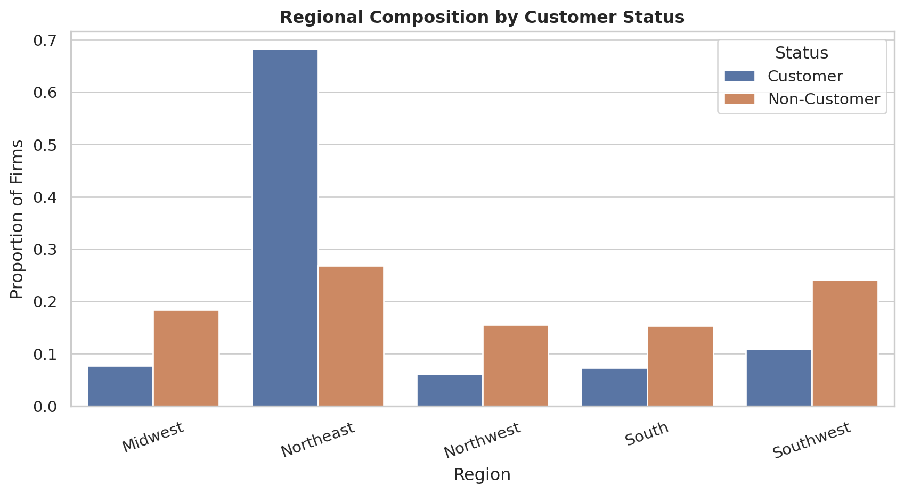
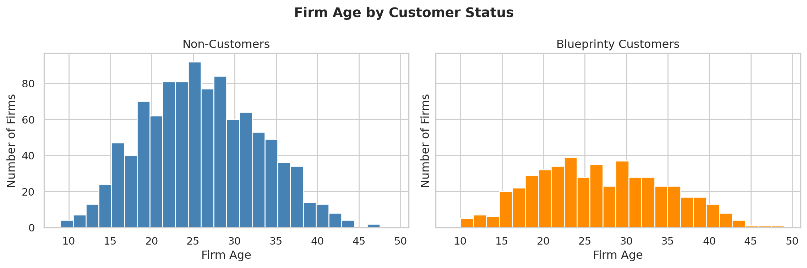

Poisson Regression and Maximum Likelihood Estimation
A Case Study of Blueprinty’s Software and Patent Awards
Author
Alex Matrajt Frid
Published
May 17, 2026
Introduction
Blueprinty is a small software company that develops blueprint design tools specifically for engineering firms submitting patent applications to the United States Patent Office. The company’s marketing team would like to make the claim that firms using Blueprinty’s software are more successful at obtaining patent approvals.
Evaluating this claim is not straightforward. In an ideal world, we would observe the same engineering firms both before and after adopting Blueprinty’s software, allowing us to isolate the software’s impact on patent success. Unfortunately, no such longitudinal dataset exists.
Instead, Blueprinty has collected cross sectional data on 1,500 mature engineering firms. The dataset includes the number of patents awarded over the last five years, each firm’s geographic region, firm age since incorporation, and whether the firm is a Blueprinty customer.
The challenge is that Blueprinty’s customers are not randomly selected. Firms that choose to purchase Blueprinty’s software may systematically differ from non customers in ways that also affect patent output. For example, older firms may have more experience navigating the patent process, and certain regions may have stronger innovation ecosystems. As a result, raw differences in patent counts between customers and non customers cannot automatically be interpreted as evidence that the software itself causes more patents.
In this post, I use Maximum Likelihood Estimation (MLE) to estimate a Poisson regression model for patent counts while accounting for observable differences across firms.
The histograms show that Blueprinty customers tend to receive more patents than non customers. The customer distribution is shifted slightly to the right, indicating higher patent counts on average.
At first glance, this appears supportive of Blueprinty’s marketing claim. However, the comparison alone is not sufficient evidence because customers and non customers may differ in other important ways.
Regional Differences

The regional composition differs across customer groups. Some regions appear to have a higher concentration of Blueprinty customers than others. This matters because patent activity may vary geographically due to local innovation ecosystems, industry clustering, university partnerships, or state level policy environments.
If customers are disproportionately concentrated in regions that are already more innovative, then a simple comparison of average patents would overstate the impact of the software.
Firm Age Differences

Firm age also differs somewhat across the two groups. Older firms may have more established R&D operations, stronger legal teams, and greater experience navigating the patent approval process.
Because both region and age could influence patent counts independently of Blueprinty’s software, the regression model later in the analysis will control for these variables.
A Simple Poisson Model via Maximum Likelihood
The outcome variable in this dataset is a count: the number of patents awarded to each firm over the last five years. Counts are non negative integers, making the Normal distribution a poor modeling choice because it allows negative values and assumes continuous outcomes.
The Poisson distribution is the standard starting point for modeling count data. Under a Poisson model, the probability of observing a count depends on a single parameter, (), which represents both the expected value and the variance of the distribution.
The log likelihood curve peaks at the value of () that makes the observed data most probable. Visually, the maximum point on the curve corresponds to the Maximum Likelihood Estimate.
Taking the derivative of the log-likelihood and solving yields:
\[
\hat{\lambda}_{MLE}=\bar{Y}
\]
This result makes intuitive sense because the Poisson distribution’s expected value is ().
We can also find the MLE numerically using scipy.optimize.minimize().
The numerical optimizer produces virtually the same estimate as the sample mean. This is expected because the analytical solution to the Poisson MLE is simply the average count.
Poisson Regression
The simple Poisson model assumes every firm has the same expected patent rate (). That assumption is unrealistic because firms differ in age, geographic location, and Blueprinty customer status.
Poisson regression extends the model by allowing each observation to have its own rate parameter:
The exponential link function ensures that predicted patent rates remain strictly positive, even though the linear predictor (X_i’) can take any real value.
The design matrix includes an intercept term, firm age, firm age squared, regional indicators, and Blueprinty customer status.
Including age squared allows the relationship between firm age and patenting to be nonlinear. Patent output may rise with experience initially but flatten out or decline for older firms.
One region category is omitted to avoid perfect multicollinearity with the intercept term. The coefficients on the included region indicators should therefore be interpreted relative to the omitted reference region.
def poisson_regression_loglikelihood(beta, y, X): linear_predictor = X @ beta lam = np.exp(linear_predictor)return np.sum(-lam + y * linear_predictor - gammaln(y +1))def negative_poisson_regression_loglikelihood(beta, y, X):return-poisson_regression_loglikelihood(beta, y, X)
initial_values = np.zeros(X.shape[1])mle_result = minimize( negative_poisson_regression_loglikelihood, x0=initial_values, args=(y, X), method="BFGS")beta_hat = mle_result.x# For a minimized negative log-likelihood, the inverse Hessian approximates# the variance-covariance matrix of the MLE.vcov = mle_result.hess_invstandard_errors = np.sqrt(np.diag(vcov))mle_table = pd.DataFrame({"term": X_df.columns,"estimate_mle": beta_hat,"std_error_mle": standard_errors})mle_table.style.format({"estimate_mle": "{:.4f}","std_error_mle": "{:.4f}"})
/tmp/ipykernel_6783/4055622547.py:3: RuntimeWarning: overflow encountered in exp
lam = np.exp(linear_predictor)
/opt/base-uv/.venv/lib/python3.13/site-packages/numpy/_core/fromnumeric.py:86: RuntimeWarning: overflow encountered in reduce
return ufunc.reduce(obj, axis, dtype, out, **passkwargs)
/opt/base-uv/.venv/lib/python3.13/site-packages/scipy/optimize/_numdiff.py:686: RuntimeWarning: invalid value encountered in subtract
df = [f_eval - f0 for f_eval in f_evals]
/tmp/ipykernel_6783/4055622547.py:3: RuntimeWarning: overflow encountered in exp
lam = np.exp(linear_predictor)
term
estimate_mle
std_error_mle
0
const
0.0000
1.0000
1
age
0.0000
1.0000
2
age_sq
0.0000
1.0000
3
iscustomer
0.0000
1.0000
4
region_Northeast
0.0000
1.0000
5
region_Northwest
0.0000
1.0000
6
region_South
0.0000
1.0000
7
region_Southwest
0.0000
1.0000
We can verify the results using statsmodels, Python’s standard package for fitting generalized linear models.
The coefficient estimates from the custom MLE routine and statsmodels should be extremely close. Small differences in standard errors can occur because the optimizer uses a numerical approximation to the Hessian matrix, while statsmodels uses specialized routines for generalized linear models.
Interpreting the Coefficients
The coefficients in a Poisson regression are interpreted differently from the coefficients in a standard linear regression. Because the model uses an exponential link function, the effects are multiplicative rather than additive. A one-unit increase in a predictor changes the expected patent count by a factor of:
\[
\exp(\beta_j)
\]
This quantity is often called the Incidence Rate Ratio (IRR). An IRR greater than 1 implies the variable increases expected patent counts, while an IRR less than 1 implies it decreases them.
The most important coefficient in this analysis is the coefficient on iscustomer. The estimated coefficient is approximately 0.208, corresponding to an incidence rate ratio of roughly 1.23. This means that, holding firm age and region constant, Blueprinty customers are expected to receive about 23% more patents than otherwise similar non-customers.
The coefficients on age and age_sq together suggest a nonlinear relationship between firm maturity and patent activity. The positive coefficient on age indicates that patent output initially increases as firms become more established and accumulate experience. However, the negative coefficient on age squared implies diminishing returns: the growth in patenting slows as firms become older. Economically, this pattern is sensible because mature firms may benefit from accumulated expertise early on, but eventually experience slower innovation growth.
The regional coefficients are all relatively small in magnitude. Because one region is omitted from the model as the reference category, these coefficients should be interpreted relative to that baseline region. For example, the coefficient on region_South corresponds to an incidence rate ratio of about 1.06, suggesting firms in the South are expected to produce roughly 6% more patents than firms in the omitted reference region, all else equal. However, the regional effects are modest compared to the customer effect.
Overall, the coefficient estimates appear economically reasonable. Firms with characteristics associated with greater innovation capacity, particularly Blueprinty customers and firms with greater operational maturity, tend to exhibit higher expected patent counts. Most importantly, the positive and substantial customer coefficient provides evidence consistent with Blueprinty’s claim that its software is associated with improved patent outcomes.
The Effect of Blueprinty’s Software
Although the Poisson regression coefficients are useful for understanding directional relationships, they are not immediately interpretable in terms of “additional patents.” Because the model is nonlinear, the effect of becoming a Blueprinty customer depends on the characteristics of each individual firm.
To produce a more intuitive estimate, I construct two counterfactual versions of the dataset:
In (X_0), every firm is treated as a non-customer (iscustomer = 0)
In (X_1), every firm is treated as a Blueprinty customer (iscustomer = 1)
Importantly, all other firm characteristics, such as age and region, are held fixed at their observed values. This isolates the portion of predicted patent activity associated specifically with customer status.
# Create two counterfactual versions of the design matrixX0_df = X_df.copy()X1_df = X_df.copy()# Scenario 1: every firm is treated as a non-customerX0_df["iscustomer"] =0.0# Scenario 2: every firm is treated as a Blueprinty customerX1_df["iscustomer"] =1.0# Use the fitted Poisson GLM to predict expected patent countspredicted_y0 = glm_result.predict(X0_df)predicted_y1 = glm_result.predict(X1_df)# Average difference in predicted patent countsaverage_effect = np.mean(predicted_y1 - predicted_y0)effect_table = pd.DataFrame({"Average predicted patents if all were non-customers": [predicted_y0.mean()],"Average predicted patents if all were customers": [predicted_y1.mean()],"Average customer effect": [average_effect]})effect_table.style.format({"Average predicted patents if all were non-customers": "{:.4f}","Average predicted patents if all were customers": "{:.4f}","Average customer effect": "{:.4f}"})
Average predicted patents if all were non-customers
Average predicted patents if all were customers
Average customer effect
0
3.4362
4.2290
0.7928
The customer coefficient tells us that Blueprinty customer status is associated with higher expected patent counts, but the coefficient itself is not directly expressed in “additional patents.” Because the Poisson model is nonlinear, it is more useful to translate the model into predicted patent counts.
To do this, I create two counterfactual versions of the data. In the first version, every firm is treated as a non-customer. In the second version, every firm is treated as a Blueprinty customer. All other firm characteristics, including age and region, are held fixed at their observed values.
The model predicts that if all firms were non-customers, they would receive an average of about 3.44 patents. If all firms were Blueprinty customers, they would receive an average of about 4.23 patents. The difference between these two predictions is about 0.79 additional patents per firm.
This means that, after controlling for firm age and region, Blueprinty customer status is associated with roughly 0.79 more patents per firm over the five-year period.
This result supports Blueprinty’s marketing claim, but it should still be interpreted carefully. The analysis is observational, not experimental. While the model controls for observable differences such as age and region, it cannot rule out unobserved differences between customers and non-customers. For example, firms that choose to use Blueprinty may already be more innovative, better managed, or more active in patent applications.
Therefore, the results provide evidence consistent with a positive relationship between Blueprinty’s software and patent success, but they do not prove that the software alone causes firms to receive more patents.
Conclusion
This analysis used Maximum Likelihood Estimation and Poisson regression to study whether Blueprinty’s software is associated with higher patent success among engineering firms. After controlling for firm age and regional differences, the results suggest that Blueprinty customers are expected to receive more patents on average than similar non-customers. While these findings are consistent with Blueprinty’s marketing claim, the study is based on observational data rather than a randomized experiment, so the results should be interpreted as evidence of association rather than definitive proof of causation.